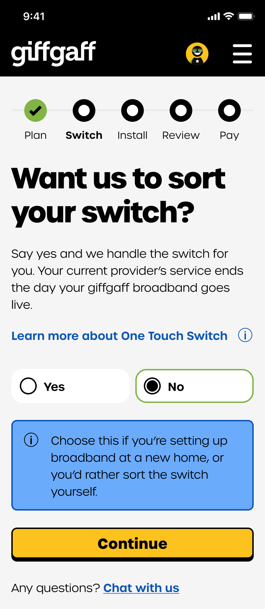
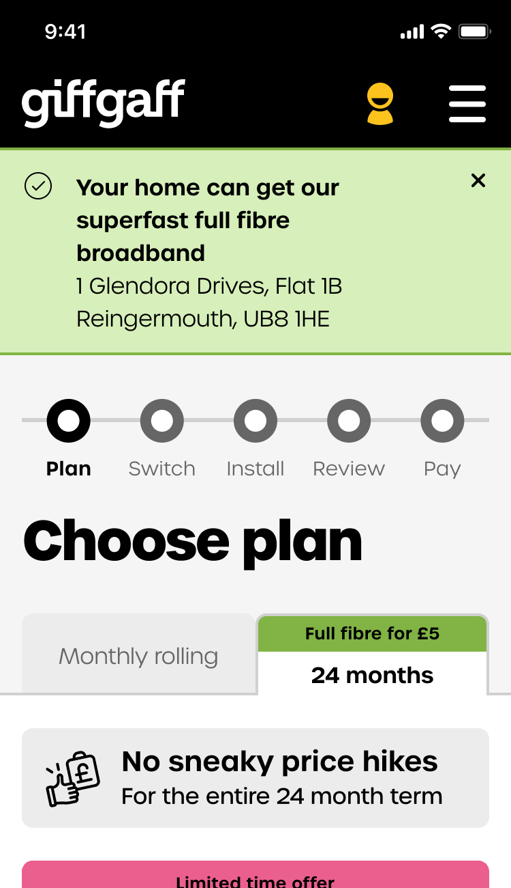
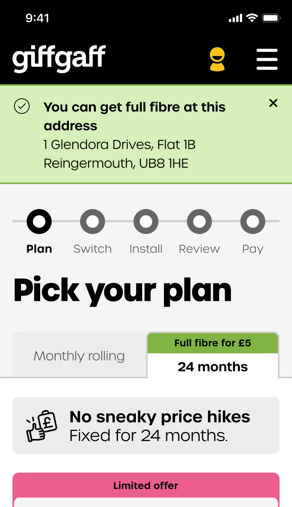
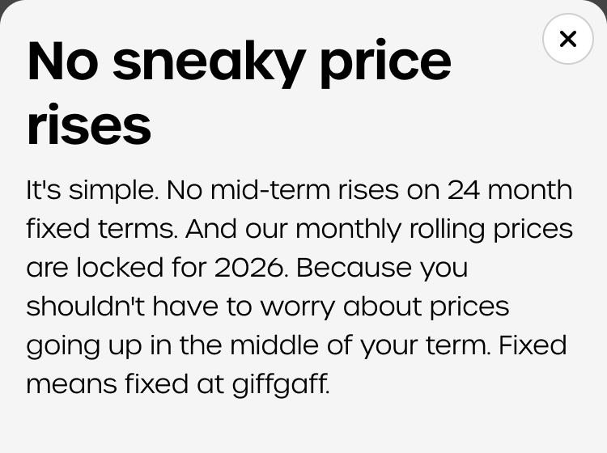
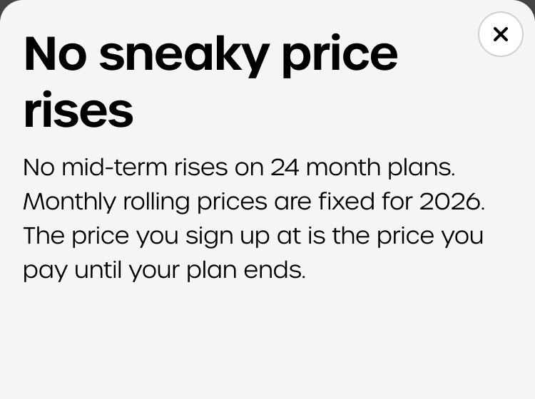

Case study 6 of 6 · Content standards
A new tone of voice, at scale
In 2026 giffgaff refreshed its brand and its voice. The 4 old pillars made way for "the straight-talking local": direct, down to earth and savvy, with a volume dial that sets how much personality each channel gets. I took the whole broadband buy journey through the new voice, screen by screen, and built the tools that keep 40-odd emails and texts sounding like the same brand.
- Role
- Content designer. Owner of the buy journey rewrite and the team's brand voice tooling
- With
- Brand team and agency, content team, product design, an internal AI delivery pilot
- When
- Voice tooling from May 2026, new voice landed September 2026, live November 2026
- Methods
- Voice principles and examples, an AI brand voice skill, template audits, reading-age audits, Maze content tests
- 11buy journey screens rewritten in the new voiceLanding page to order confirmation, new copy beneath the original in Figma
- 40+triggered emails and texts mapped and checked against the voiceOrder, installation, delay, rebooking and referral comms
- 38broadband help articles audited for reading age and severityHighest-severity article rewritten first
The brief
The agency's principles turned up as a deck. The buy journey is 11 screens of prices, regulation and engineer bookings that people read once, a bit stressed, on a phone. The volume dial was the useful idea. A social post can turn the personality up. A screen asking someone to commit to 24 months keeps it low: direct first, warmth second, no jokes anywhere near the price.
The rewrite
I took every screen of the journey through the new voice in Figma, with each new-voice version sitting directly under the original so reviewers could read both without switching files. Where a line had already earned its place in testing, like the switch promises, I changed the voice around it rather than the words that had done the work.
The first drafts came from the AI brand voice tool I'd built. They were fluent, and they weren't right. So I binned them and wrote the third version myself. The tool's still useful for checking consistency and catching the old pillars creeping back in, just not for writing the thing.
3 screens, before and after
Switch step, current voice

Switch step, new voice

Choose plan, current voice

Choose plan, new voice

Price promise, current voice

Price promise, new voice

Making the voice hold without me in every ticket
A voice that lives in one person's head fails the first week they're on holiday. So alongside the rewrite I built the things that let the rest of the team, and the AI tools they use, write in it.
A brand voice skill
I wrote and look after a brand voice skill for the content team's AI assistant. It holds the principles, the volume dial for each channel, the glossary, and the inclusive and accessible writing rules, so a first draft of an SMS or a help article starts from the same place whoever asks for it. When the new voice landed in September, I rewrote the skill the same week so the tooling didn't carry on producing the old one.
Mapping and auditing the comms estate
Broadband generates 40-odd triggered emails and texts between an order and a settled connection: confirmation, install reminders, delays, rebooking, referral updates. I had them mapped onto one board, went through every template against the voice, and turned the messiest category, delay updates, into a repeatable email and SMS pattern with a line of copy ready for each delay code the engineers can report.
Help content by reading age
I audited all 38 broadband help articles for reading age and severity. The switching article, which most people meet once and at a nervous moment, came out at a reading age of 12 to 13 and the highest severity in the set. It got rewritten first, as 2 articles, one for people joining and one for people leaving.
Words that ship without an engineer
giffgaff is piloting a way of building where AI agents work from tickets. I own content discovery and tone of voice in it, and I set up the process that takes a content idea to a ticket the pipeline can pick up. A copy change can go through as its own ticket rather than waiting to be bundled into someone else's work.
Since it went live
The refreshed journey went live in November 2026, with a holdout group so the effect gets measured rather than assumed. The new-voice screens go through the same comprehension tests as everything else on this site. The refreshed landing page tested at 4.5 out of 5 for clarity before my copy pass. The copy has to hold that or beat it.